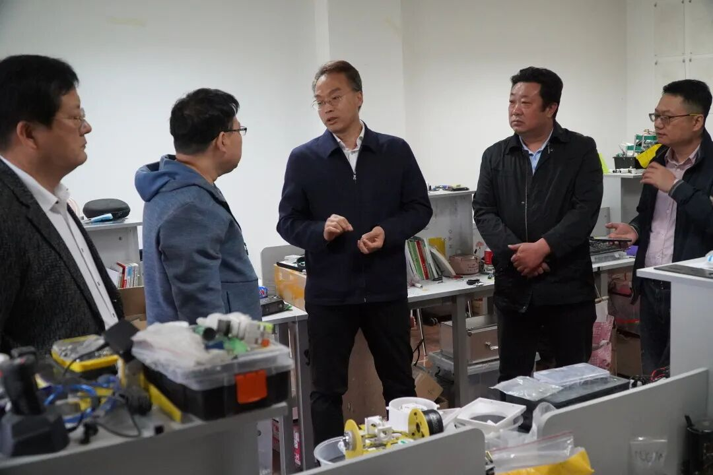
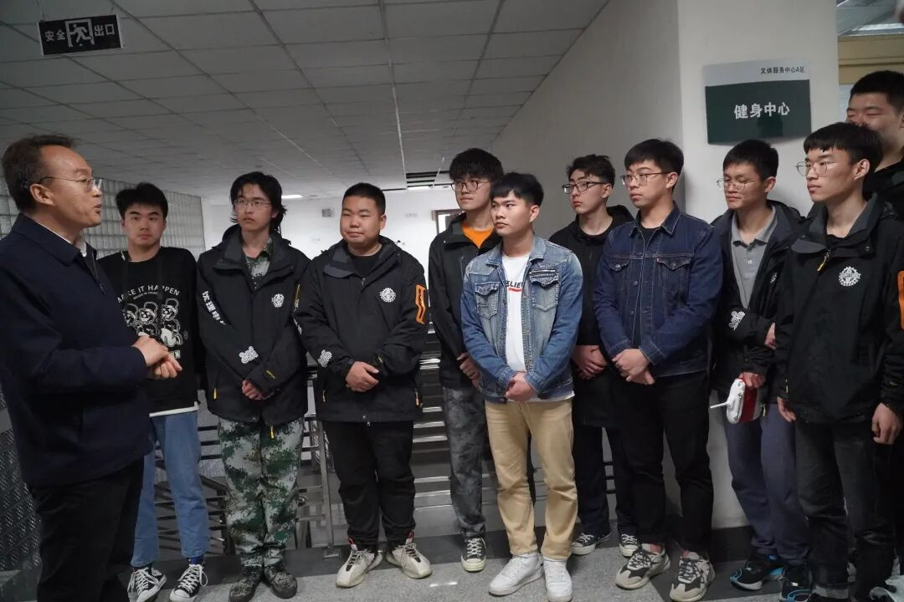

使用小程序
部分资料来源：创新创业中心

5月7日上午，校长宁先圣受我校Ambition战队的盛情邀请，先后来到Ambition战队工作室和创新创业孵化基地走访调研。
宁先圣校长认真听取了同学们的介绍，并对同学们关心的问题分别作了回应。随后，宁先圣参观了Ambition战队工作室，观摩了工作室成员制作的步兵、哨兵、英雄、工程机器人、空中机器人以及雷达站等创新作品。

宁先圣校长对Ambition战队近几年所取得的成绩给予了充分的肯定，对同学们积极的创新热情和饱满的青春活力表示认可。宁先圣认为Ambition战队工作室的工作非常有意义，高度吻合“没有理论就没有高度、没有特色就没有优势、没有应用就没有价值”三大理念，希望Ambition战队成员可以不断传承，不断通过多种渠道锻炼自己、武装自己、充实自己，同时预祝Ambition战队在不久后的2021RoboMaster机甲大师超级对抗赛北部分区赛中取得优异的成绩。
视频|信息部
图片|创新创业中心